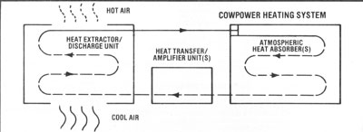

Farmers have known for years that, early on a biting-cold January morning (before the woodstove has been stoked up to househeating pitch), about the warmest place to be on a homestead is down in the old cow barn. Of course, it's one thing to work in a barn, but it would be quite another to live there . . . so few people ever consider using Bossy's excess BTU to heat their homes!
FROM COMPUTERS TO COWS
Recently, however, Bryan Ramlow (a former IBM engineer from Poynette, Wisconsin) has developed a new heating layout that's able to successfully harness bovine heat and use it-sans humidity, mess, or odor-to warm a whole house! Bryan, who had always been interested in new energy-efficient ways to transfer heat, first got the inspiration for what he eventually titled "Cowpower" about five years ago ... when, on a bitterly cold day, he tromped out to fix a farmer's brokendown milk cooler. While laboring in the cowfilled building, Ramlow couldn't help noticing that-even with some of the windows open-the barn was one heck of a lot warmer than the wintry outdoors.
Bryan was aghast to think that valuable heat was being lost out windows and simply wasted, so he went home that night and started puzzling over just how to "corral" all those cow calories.
It wasn't long before the inventive engineer realized that, since a single cow gives off 3,500-4,000 BTU an hour, a mere 15 milkers could provide sufficient excess warmth to heat a standard 2,000-square-foot home. Ramlow then devised a prototype Cowpower system . . . but he tested the unit for a year before he was satisfied enough to put it on the market.
HOW DOES IT WORK?
Bryan's invention can be described as operating like a refrigerator in reverse (see the diagram below). A fan blows the 40° to 50°F air from a milk barn across a set of heat absorbers installed in that building. (Since the moisture in this air is condensed by these absorbers-and then drained off into a gutter outside the barn-the system dehumidifies the cows' environment.)
Next, the captured thermal energy is transferred into a pipe carrying Freon gas. While still at the barn, this gas is pumped through a twin set of compressors and put under enough pressure to raise its temperature to over 200°F. The superheated Freon is then pumped underground through sealed copper tubing to a heat exchanger in the house. Finally, circulated home air-blown over the hot coils in the exchanger-absorbs the warmth and is then routed throughout the building.
A BUYER!
Carol Dieterich-a dairywoman and owner of 30 Holsteins-had been having a great deal of trouble trying to figure out an alternative way to heat her old oil-guzzling farmhouse. She read about Cowpower in an ad in the Farmer's Exchange . . . and, excited about the prospect of actually employing her own animals to inexpensively and efficiently heat her house, Carol immediately contacted the Cowpower representative in her area.
That person turned out to be Cy Westerman, a local cattle artificial inseminator who had worked for the Dieterich family for years. Cy came right over to explain exactly how the bovine heating system could work for her . . . and the dairywoman signed the papers to have Cowpower installed the very next day!
SOME HARD FACTS
Carol's unit cost about $13,000, which included all the ductwork that had to be installed in her house (it previously had no forced-air heating system). The basic price for a Cowpower system is about $11,000, which, admittedly, isn't a minor investment . . . but Bryan Ramlow claims that each setup that he or one of his representatives installs is designed for the customer's particular needs.
Carol also allows that her system needs some maintenance and that a few kinks had to be ironed out. For instance, the screens for the intake fans must be scrubbed daily because they get clogged with hay and dust from the barn. But Dieterich doesn't mind that chore . . . she feels that cleaning a few screens beats the time and effort involved in chopping wood, any day!
Problems of a more serious nature, however, occurred last January (during her first full winter with the system) when the temperature outdoors dropped to -25°F . . . the temperature inside the barn fell to 29 °F above . . . and the Cowpower setup's intake fans froze. Cy came out immediately, saw that the blowers' defrost unit had been wired improperly, and remedied the problem at no extra charge. Another time, a leaky valve caused a loss of Freon . . . but-as with the first breakdown-once it was detected, Cy took care of it rapidly at no expense. Neither disorder has occurred again.
All in all, Carol is delighted with her decision to heat with Cowpower. As she says, "I used to pay $600 a month to heat this house, and even so, we had to close off halt' the rooms and practically live in the kitchen. Last winter, though, my heating bill was only half of what it used to be. Better yet, the whole house is warm-72°F!-which is a real blessing . . . especially since my 76-year-old mother and 99-year-old grandmother live here, and a cold house just isn't good for old people."
EDITOR'S NOTE: For more information about how Cowpower works, other systems operating in the U.S., or the company's representatives in different parts of the country . . . write to Bryan Ramlow at Atmospheric Energy Systems, Inc., Dept. TMEN, P.O. Box 453, Poynette, Wisconsin 53955 or phone 608/635-2707.
Readers who know something about heating and refrigeration will recognize that Cowpower is based upon the use of a heat pump. A do-it-yourselfer with sufficient expertise, therefore, might be able to concoct a less costly system from standard components.
|
 |
|
|